TRANSDUCER BEAMWIDTH CALIBRATION
The script simulates the acquisition and processing of ultrasonic signals to calibrate the beamwidth of a transducer. The simulation incorporates the radiation pattern of different apertures as given in [1]. [1]. Steinberg, Bernard D, (1976); 'Principles of aperture and array system design'. John Wiley & Sons
Contents
OPTIONS
clear all close all clc chirp_pulse = 1; % 1 to simulate using a chirp pulse; 0 to simulate using a monochrome pulse simulate_WGN = 0; % 1 to simulate with white noise; 0 to simulate without white noise if simulate_WGN == 1 SNR = 3; % Signal to noise ratio in dB end; aperture = 1; % 1 for rectangular aperture, 2 for triangular aperture % Figure print parameters szAxScale = 20; szAxLabel = 20; figRes = '-r300'; % Output path if chirp_pulse == 1 if simulate_WGN == 0 outpath = './images/chirp pulse/without noise'; else outpath = './images/chirp pulse/with noise'; end; else if simulate_WGN == 0 outpath = './images/monochrome pulse/without noise'; else outpath = './images/monochrome pulse/with noise'; end; end;
ACQUISITION PARAMETERS
c = 1500; % Speed of ultrasonic propagation fc = 400e3; % Centre frequency B = 5e3; % Signal bandwidth B0 = B/2; % Baseband bandwidth lambda_c = c/fc; % Wavelength at centre frequency lambda_min = c/(fc+B0); lambda_max = c/(fc-B0); Tp = 5e-3; % Pulse width K = B0/Tp; % Chirp rate beta = fc - B0; % Modified chirp carrier if chirp_pulse %fs = 10*B; fs = 4*(fc+B0); else fs = 5*fc; end;
GEOMETRY PARAMETERS
R = 3; % Distance between transmitter and receivers D = 0.10; % Dimension of the transducer along the azimuth dtheta = 0.1; % Angular acquisition interval in degrees theta_start = 0; theta_end = 360; theta_s = theta_end - theta_start; % Angular acquisition length in degrees switch aperture case 1 phi_d = (180/pi)*asin(0.88*lambda_c/D); % Divergence angle (beamwidth) in degrees for a rectangular aperture case 2 phi_d = (180/pi)*asin(1.27*lambda_c/D); % Divergence angle (beamwidth) in degrees for a triangular aperture otherwise error('Unexpected aperture type!'); end;
DATA VECTORS
m = ceil(theta_s/dtheta); % Number of acquisitions u = theta_start + dtheta*(0:m-1); % Azimuth vector dt = 1/fs; Ts = 0; % Sampling start time Te = (R/c + Tp*1.5); % Sampling end time n = 2*ceil((Te - Ts)/(2*dt)); t = Ts+ dt*(0:n-1); % Time vector df = 1/(n*dt); f = df*(0:n-1); % Frequency vector
THE TRANSMITTED SIGNAL
The transmitted pulse
td = t-Ts; if chirp_pulse pha = 2*pi*(beta*td + K*td.^2); else pha = 2*pi*fc*td; end; pt = exp(1j*pha).*(td>=0 & td <= Tp); figure('name','The transmitted pulse in the time domain') plot(td,real(pt)) title('Transmitted pulse', 'fontsize', szAxLabel) xlabel('Time, t [s]', 'fontsize', szAxLabel) ylabel('Amplitude (Real), p(t)', 'fontsize', szAxLabel) h_fig=get(gcf,'CurrentAxes'); set(h_fig, 'fontsize', szAxScale); axis 'square' print('-dpng', figRes, [outpath '/Transmitted pulse in the time domain']) figure('name','The magnitude spectrum of transmitted pulse') plot(f, abs((fft(pt)))) title('Magnitude spectrum of transmitted pulse', 'fontsize', szAxLabel) xlabel('Frequency, f [Hz]', 'fontsize', szAxLabel) ylabel('Magnitude, |P(f)|', 'fontsize', szAxLabel) h_fig=get(gcf,'CurrentAxes'); set(h_fig, 'fontsize', szAxScale); axis 'square'; axis tight print('-dpng', figRes, [outpath '/Magnitude spectrum of the transmitted pulse']) pt = pt.*exp(-1j*2*pi*fc*t); figure('name','The baseband transmitted pulse in the time domain') plot(td,real(pt)) title('Basebanded transmitted pulse', 'fontsize', szAxLabel) xlabel('Time, t [s]', 'fontsize', szAxLabel) ylabel('Amplitude (Real), p(t)', 'fontsize', szAxLabel) h_fig=get(gcf,'CurrentAxes'); set(h_fig, 'fontsize', szAxScale); axis 'square' print('-dpng', figRes, [outpath '/Basebanded transmitted pulse in the time domain']) figure('name','The magnitude spectrum of transmitted pulse') plot(df*(-n/2:n/2-1), abs(fftshift((fft(pt))))) title('Magnitude spectrum of basebanded transmitted pulse', 'fontsize', szAxLabel) xlabel('Frequency, f [Hz]', 'fontsize', szAxLabel) ylabel('Magnitude, |P(f)|', 'fontsize', szAxLabel) h_fig=get(gcf,'CurrentAxes'); set(h_fig, 'fontsize', szAxScale); axis 'square'; axis tight print('-dpng', figRes, [outpath '/Magnitude spectrum of basebanded transmitted pulse'])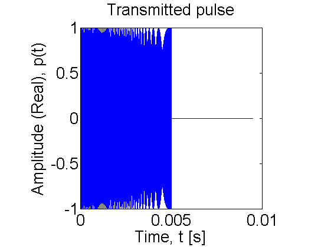 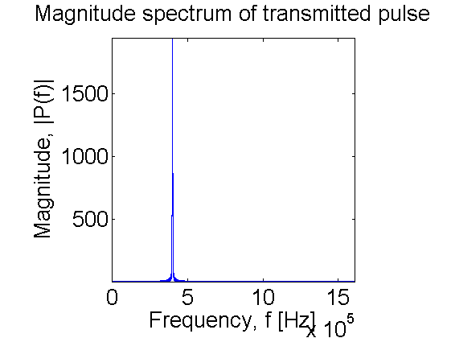 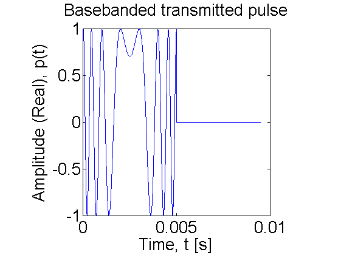 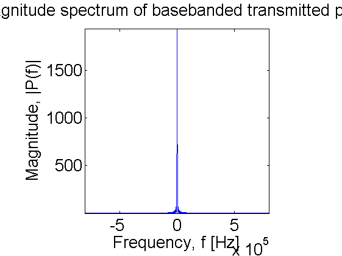
ACQUISITION SIMULATION
td = ones(m,1)*(t - R/c); % Propagation delay of the pulse if chirp_pulse pha = 2*pi*(beta*td + K*td.^2); else pha = 2*pi*fc*td; end; stu = exp(1j*pha).*(td >= 0 & td <= Tp); stu = stu.*exp(-1j*2*pi*fc*(ones(m,1)*t)); % Baseband conversion % Incorporate beampattern switch aperture case 1 beam_arg = ((D*((u-90)*pi/180))/lambda_c); beam_pattern = sinc(beam_arg); % Radiation pattern for a rectangular aperture case 2 beam_arg = ((D*((u-90)*pi/180))/(2*lambda_c)); beam_pattern = (sinc(beam_arg)).^2; % Radiation pattern for a triangular aperture end; figure('name','Theoretical radiation pattern') polar(u*pi/180, abs(beam_pattern)) title(['Theoretical radiation pattern. Beamwidth = ',num2str(phi_d),' [deg]'], 'fontsize', szAxLabel) % xlabel('Angle, \theta [deg]', 'fontsize', szAxLabel) % ylabel('Level', 'fontsize', szAxLabel) h_fig=get(gcf,'CurrentAxes'); set(h_fig, 'fontsize', szAxScale); axis 'square'; %axis tight print('-dpng', figRes, [outpath '/Theoretical radiation pattern']) stu = stu.*(beam_pattern.'*ones(1,n)); if simulate_WGN == 1 amplitude_noise = randn(m,n)*10^(-SNR/20); phase_noise = randn(m,n)*10^(-SNR/20); stu = stu + (amplitude_noise);%.*exp(1j*2*pi*phase_noise)); end; % G = real(stu); % figure('name','Acquired ultrasound data') % colormap(hot) % imagesc(t,u,G); % axis 'square'; axis 'xy'; colorbar; % xlabel('Time, t [s]', 'fontsize', szAxLabel) % ylabel('Angle, \theta [deg]', 'fontsize', szAxLabel) % h_fig=get(gcf,'CurrentAxes'); % set(h_fig, 'fontsize', szAxScale); theta_slice = 90; theta_bin = ceil((theta_slice - theta_start)/dtheta); figure('name','Received signal at boresight'); % subplot(121) plot(t, real(stu(theta_bin,:))) title('Real part of the received signal at boresight', 'fontsize', szAxLabel) xlabel('Time, t [s]', 'fontsize', szAxLabel) ylabel('Amplitude (Real), s(t)', 'fontsize', szAxLabel) h_fig=get(gcf,'CurrentAxes'); set(h_fig, 'fontsize', szAxScale); axis 'square'; axis tight print('-dpng', figRes, [outpath '/Received signal at boresight']) % subplot(122) % plot(t, angle(stu(theta_bin,:))/(2*pi)) % title('Phase of the received signal at 90 degrees', 'fontsize', szAxLabel) % xlabel('Time, t [s]', 'fontsize', szAxLabel) % ylabel('Phase, *2\pi [rads]', 'fontsize', szAxLabel) % h_fig=get(gcf,'CurrentAxes'); % set(h_fig, 'fontsize', szAxScale); % axis 'square'; axis tight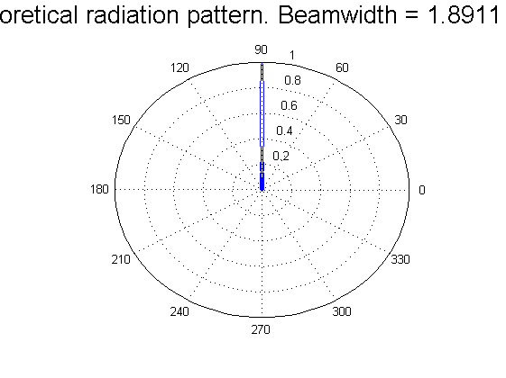 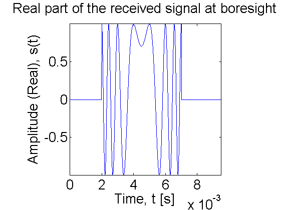
BEAMWIDTH CALIBRATION BY MATCHED FILTERING
f = df*(-n/2:n/2-1); % The reference signal: a shifted version of the transmitted pulse % td0 = t - R/c; % if chirp_pulse % pha0 = 2*pi*(beta*td0 + K*(td0.^2)); % else % pha0 = 2*pi*fc*td0; % end; % s0 = exp(1j*pha0).*(td0>=0 & td0<=Tp); % s0b = s0.*exp(-1j*2*pi*fc*t); % baseband reference signal % fs0b = fty(s0b); % FFT of reference signal % Alternatively the existing transmitted signal vector can be time-shifted % by multiplying by a phase in the frequency domain s0b = pt; fs0b = fty(s0b).*exp(-1j*2*pi*f*R/c); fsb = fty(stu); % FFT of baseband echoed signal fsmb = fsb.*(ones(m,1)*conj(fs0b)); % Matched filtering and windowing fsmb = fsmb.*(ones(m,1)*(abs(f) <= B0)); smb = ifty(fsmb); tm=(R/c)+dt*(-n/2:n/2-1); % fast-time array after matched filtering G=abs(smb); xg=max(max(G)); ng=min(min(G)); cg=255/(xg-ng); figure('name', 'SAS signal after range compression') colormap(hot(256)) imagesc(c*tm, u, G); title('Matched filtered signal variation with angle', 'fontsize', szAxLabel) xlabel('Range, ct [m]', 'fontsize', szAxLabel) ylabel('Angle, \theta [deg]','fontsize', szAxLabel) h_fig=get(gcf,'CurrentAxes'); set(h_fig, 'fontsize', szAxScale); axis('square'); axis('xy'); colorbar print('-dpng', figRes, [outpath '/Matched filtered signal variation with angle']) figure('name','Received signal at boresight after matched filtering'); % subplot(121) plot(c*tm, G(theta_bin,:)) title('Magnitude of match filtered signal at boresight', 'fontsize', szAxLabel) xlabel('Range, ct [m]', 'fontsize', szAxLabel) ylabel('Amplitude, s_m(t)', 'fontsize', szAxLabel) h_fig=get(gcf,'CurrentAxes'); set(h_fig, 'fontsize', szAxScale); axis 'square'; axis tight print('-dpng', figRes, [outpath '/Output of matched filter at boresight']) % subplot(122) % plot(c*tm, angle(smb(theta_bin,:))/(2*pi)) % title('Phase of match filtered signal at 90 degrees', 'fontsize', szAxLabel) % xlabel('Range, ct [m]', 'fontsize', szAxLabel) % ylabel('Phase, *2\pi [rads]', 'fontsize', szAxLabel) % h_fig=get(gcf,'CurrentAxes'); % set(h_fig, 'fontsize', szAxScale); % axis 'square'; axis tight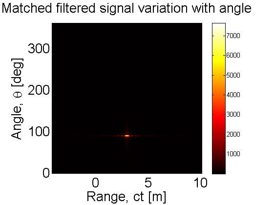 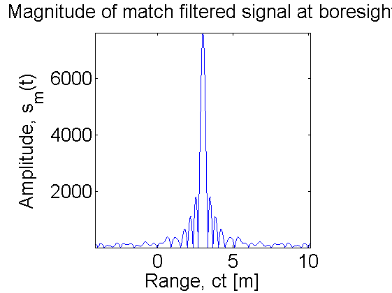
DIG OUT THE PEAKS OF THE PROCESSED DATA
act_Beam = zeros(1,m); for i = 1:m temp = abs(smb(i,:)); temp1 = (temp == max(temp)); idx = find(temp1,1,'first'); act_Beam(i) = abs(smb(i,idx)); end; act_Beam_normalised = act_Beam./max(act_Beam); threedB_level = 0.7; % -3dB level is the 0.7V or 0.5W threedB_points = [u(find(act_Beam_normalised >= threedB_level,1,'first')),... u(find(act_Beam_normalised >= threedB_level,1,'last'))]; actual_phi_d = threedB_points(2) - threedB_points(1); fprintf('Theoretical transducer beamwidth = %.2f degrees\n',phi_d); fprintf('Measured transducer beamwidth = %.2f degrees\n',actual_phi_d); figure('name','Measured radiation pattern (extracted from processed data)') % subplot(2,2,2) plot(u, act_Beam_normalised) title('Measured radiation pattern on linear scale', 'fontsize', szAxLabel) xlabel('Angle, \theta [deg]', 'fontsize', szAxLabel) ylabel('Normalized level', 'fontsize', szAxLabel) axis 'square'; axis 'tight' h_fig=get(gcf,'CurrentAxes'); set(h_fig, 'fontsize', szAxScale); print('-dpng', figRes, [outpath '/Measured radiation pattern']) figure('name','Measured radiation pattern - dB scale') % subplot(2,2,4) plot(u, 20*log10(act_Beam_normalised)) title('Measured radiation pattern on dB scale', 'fontsize', szAxLabel) xlabel('Angle, \theta [deg]', 'fontsize', szAxLabel) ylabel('Normalized level, [dB]', 'fontsize', szAxLabel) axis 'square'; axis 'tight' h_fig=get(gcf,'CurrentAxes'); set(h_fig, 'fontsize', szAxScale); print('-dpng', figRes, [outpath '/Measured radiation pattern (dB)']) figure('name','Measured radiation pattern - Polar plot') % subplot(2,2,[1 3]) polar(u*pi/180, act_Beam_normalised) title(['Measured radiation pattern. Beamwidth = ',num2str(actual_phi_d),' [deg]'], 'fontsize', szAxLabel) axis 'square'; %axis tight h_fig=get(gcf,'CurrentAxes'); set(h_fig, 'fontsize', szAxScale); print('-dpng', figRes, [outpath '/Measured radiation pattern (Polar)'])
Theoretical transducer beamwidth = 1.89 degrees Measured transducer beamwidth = 1.80 degrees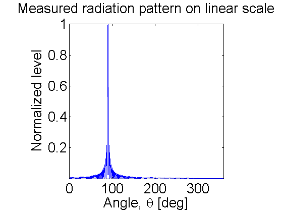 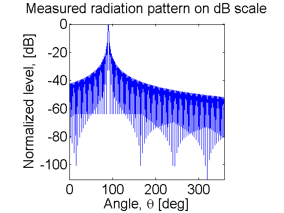 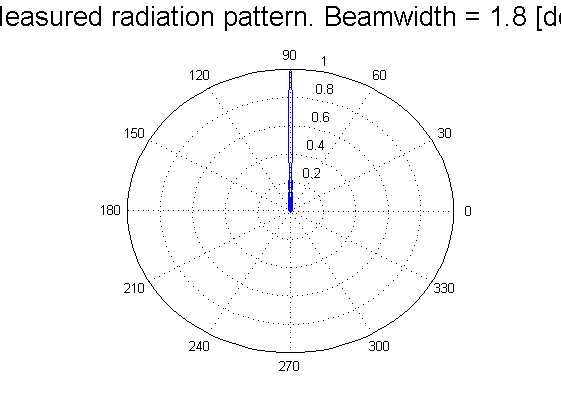